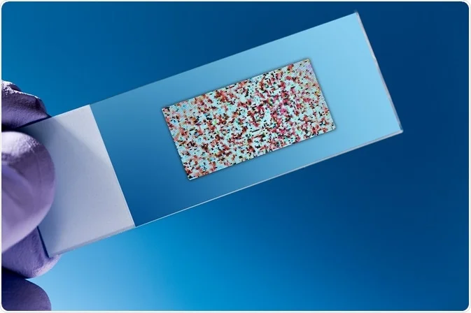

Lista produktów

Budowa sieci interacji białek
Interakcje białko-białko (PPI) są niezbędne w prawie każdym procesie w komórce, więc zrozumienie PPI ma kluczowe znaczenie dla zrozumienia fizjologii komórki w stanach normalnych i chorobowych
- Cena: 1000 zł
- Czas oczekiwania: 24h
ZobaczRekonstrukcja drzew filogenetycznych
Rekonstrukcja filogenezy przydaje się do wyjaśniania ewolucji danej grupy organizmów, pokazania kolejnych etapów jej różnicowania się lub uzyskiwania określonych adaptacji.
- Cena: 1000 zł
- Czas oczekiwania: 24h
Zobacz

Analiza mikromacierzy DNA
Techniki analizy mikromacierzy są wykorzystywane do interpretacji danych generowanych z eksperymentów na DNA
- Cena: 1000 zł
- Czas oczekiwania: 24h
Zobacz